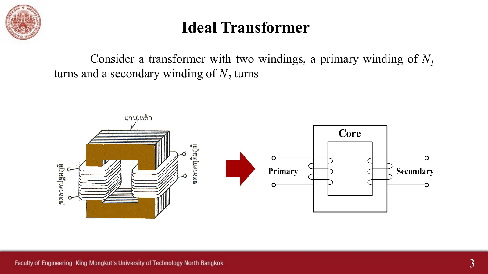
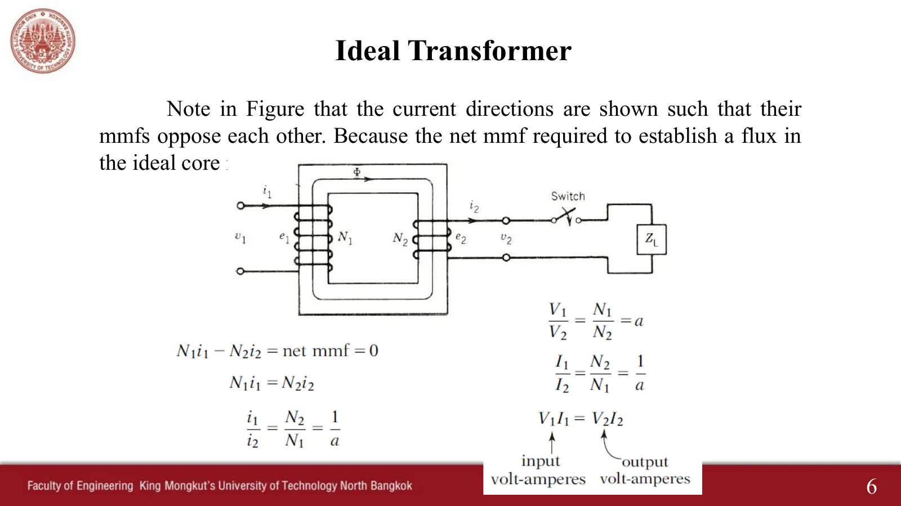
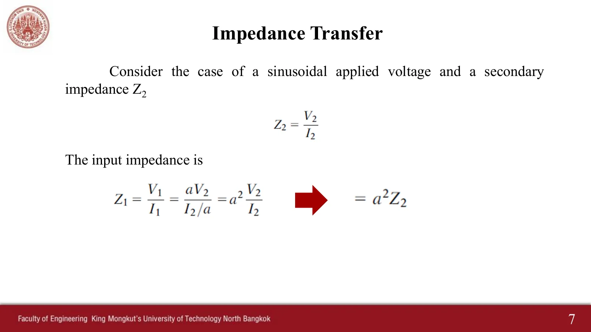
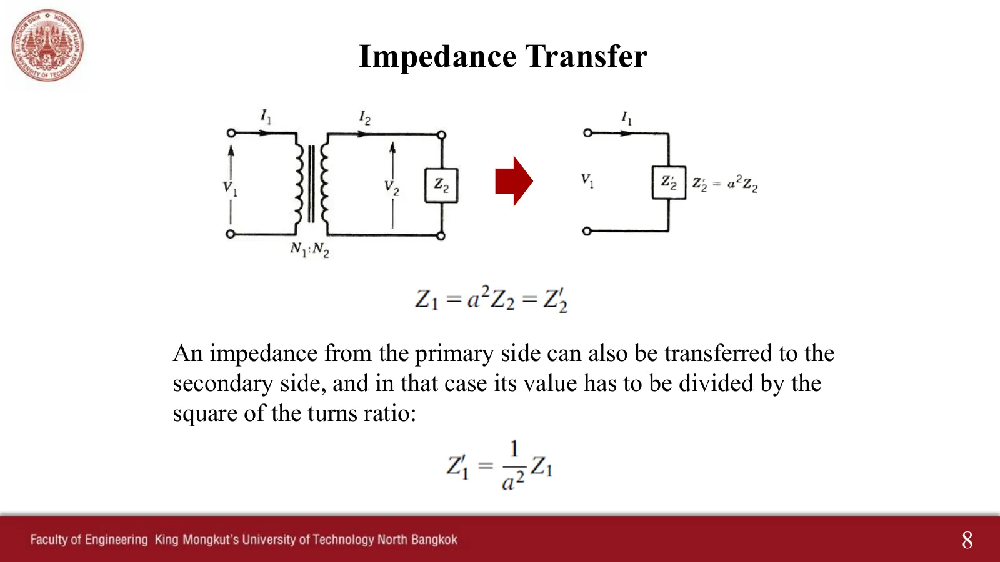
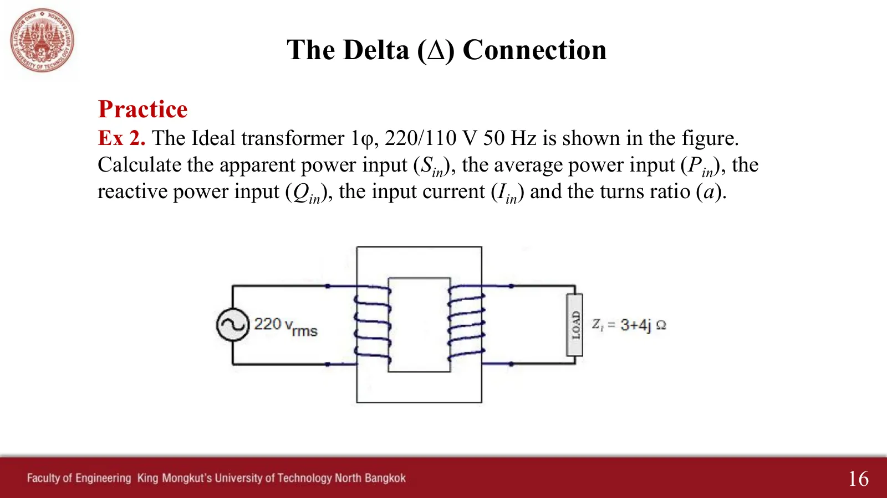

หม้อแปลงอุดมคติและการโอนอิมพีแดนซ์ Two coils on one core: voltages by the turns ratio, currents the other way round
The ideal transformer and impedance transfer Two coils on one core: voltages by the turns ratio, currents the other way round
หม้อแปลง (transformer) คือเครื่องจักรกลไฟฟ้าที่อยู่นิ่ง ไม่ได้แปลงพลังงานไฟฟ้าเป็นพลังงานกล แต่ขาดไม่ได้ในระบบไฟฟ้ากำลัง ประกอบด้วยวงจรไฟฟ้าสองวงที่ต่อถึงกันด้วยวงจรแม่เหล็กวงเดียว (สไลด์หม้อแปลงหน้า 2–3) หน้านี้ใช้สิ่งที่ได้จากหน้า 10.1–10.3: ฟลักซ์ในแกนเดียวกันคล้องขดลวดทั้งสองชุด แรงดันของแต่ละขดลวดจึงแปรตามจำนวนรอบ \(V_1/V_2 = N_1/N_2 = a\) และถ้าแกนมีความซึมซาบสูงมาก mmf ของสองขดลวดต้องหักล้างกัน จึงได้ \(I_1/I_2 = 1/a\) (ส่วน A) ผลที่ตามมาคือการโอนอิมพีแดนซ์ \(Z_1 = a^2Z_2\) ซึ่งใช้ในโจทย์ Ex 1 ลำโพงกับหม้อแปลง 1 : 3 (ข้อ 1) และ Ex 2 หม้อแปลง 220/110 V (ข้อ 2) ค่าทุกตัวเป็นค่ายังผล
A transformer is a static machine: it does not convert electrical energy into mechanical energy, yet power systems cannot do without it. It is two electric circuits coupled by one magnetic circuit (transformer slides pp. 2–3). This page uses what pages 10.1–10.3 built: one core flux links both coils, so each coil's voltage follows its turns, \(V_1/V_2 = N_1/N_2 = a\), and if the core's permeability is very high the two mmfs must cancel, so \(I_1/I_2 = 1/a\) (section A). It follows that impedances transfer as \(Z_1 = a^2Z_2\), used in Ex 1, a speaker with a 1 : 3 transformer (problem 1), and Ex 2, a 220/110 V transformer (problem 2). All values are rms.
ประเด็นสำคัญของหน้านี้
- หม้อแปลงอุดมคติ (สไลด์หน้า 4): ความต้านทานของขดลวดเป็นศูนย์ ไม่มีฟลักซ์รั่วและไม่มีการสูญเสียในแกน และแกนมีความซึมซาบเป็นอนันต์ จึงไม่ต้องใช้กระแสสร้างฟลักซ์เลย
- แรงดัน (สไลด์หน้า 5): \(v_1 = N_1\,d\phi/dt\) และ \(v_2 = N_2\,d\phi/dt\) ด้วยฟลักซ์ตัวเดียวกัน จึงได้ \(V_1/V_2 = N_1/N_2 = a\) เรียก a ว่าอัตราส่วนรอบ (turns ratio) a > 1 คือหม้อแปลงลดแรงดัน
- กระแส (สไลด์หน้า 6): mmf สุทธิเป็นศูนย์ \(N_1i_1 - N_2i_2 = 0\) จึงได้ \(I_1/I_2 = 1/a\) และ \(V_1I_1 = V_2I_2\): กำลังเข้าเท่ากับกำลังออก ฝั่งแรงดันสูงมีกระแสน้อย
- การโอนอิมพีแดนซ์ (สไลด์หน้า 7–8): ด้านปฐมภูมิมองเห็นโหลด \(Z_2\) เป็น \(Z_1 = a^2Z_2\) โอนจากด้านปฐมภูมิไปด้านทุติยภูมิให้หารด้วย \(a^2\) หม้อแปลงจึงใช้ปรับอิมพีแดนซ์ให้ส่งกำลังได้สูงสุด (ข้อ 1)
Key points of this page
- The ideal transformer (slide p. 4): the winding resistances are zero, there is no leakage flux and no core loss, and the core's permeability is infinite, so no current at all is needed to set up the flux.
- Voltages (slide p. 5): \(v_1 = N_1\,d\phi/dt\) and \(v_2 = N_2\,d\phi/dt\) with one and the same flux, so \(V_1/V_2 = N_1/N_2 = a\), the turns ratio; a > 1 is a step-down transformer.
- Currents (slide p. 6): the net mmf is zero, \(N_1i_1 - N_2i_2 = 0\), so \(I_1/I_2 = 1/a\) and \(V_1I_1 = V_2I_2\): power in equals power out, and the high-voltage side carries the small current.
- Impedance transfer (slides pp. 7–8): the primary sees a load \(Z_2\) as \(Z_1 = a^2Z_2\); going from the primary to the secondary, divide by \(a^2\). A transformer can therefore match impedances for maximum power transfer (problem 1).
![Transformer slide 2, Introduction: a transformer is a static machine. Although it is not an energy conversion device, it is indispensable in many energy conversion systems. It is a simple device, having two or more electric circuits coupled by a common magnetic circuit. Analysis of transformers involves many principles that are basic to the understanding of electric machines. Transformers are so widely used as electrical apparatus that they are treated along with other electric machines in most books on electric machines](slides/ch10/t02.webp)

ดูสไลด์ที่ผู้สอนเขียนในห้อง (ปี 2568)See the slides as written in class (2025)
หม้อแปลงอุดมคติ: ฟลักซ์เดียว แรงดันตามจำนวนรอบ และ mmf ที่หักล้างกัน
The ideal transformer: one flux, voltages by the turns, and mmfs that cancel
![Transformer slide 4, Ideal Transformer: let us consider an ideal transformer that has the following properties: 1. the winding resistances are negligible; 2. fluxes are confined to the core and link both windings, that is, no leakage fluxes are present; core losses are negligible; 3. permeability of the core is infinite (i.e., μ = ∞); therefore, the exciting current required to establish flux in the core is negligible, that is, the net mmf required to establish a flux in the core is zero. A core with N1 and N2, a dot at the top of each winding, V1, E1 and I1 on the primary and E2, V2 and I2 on the secondary](slides/ch10/t04.webp)




ไฟ 220 V 50 Hz ต่อกับขดลวดปฐมภูมิ \(N_1\) รอบ ขดลวดทุติยภูมิ \(N_2\) รอบจ่ายโหลด \(R_L\) ภาพจำลองบนสุดคือแกนที่ฟลักซ์วิ่งกลับไปมา ขนาดของฟลักซ์ \(\Phi_{max} = V_1/(4.44fN_1)\) ขึ้นกับแรงดันและ \(N_1\) เท่านั้น (หน้า 10.3) ด้านล่างคือวงจรที่ตัวแก้วงจรแก้พร้อมหม้อแปลงอุดมคติ แผงข้างภาพเทียบกำลังเข้ากับกำลังออก และ mmf \(N_1I_1\) กับ \(N_2I_2\) ซึ่งเท่ากันเสมอ ลองเปิดสวิตช์โหลด (สไลด์หน้า 6): \(I_2 = 0\) แล้ว \(I_1\) ก็เป็นศูนย์ด้วย แต่ฟลักซ์ยังอยู่ เลือก "วงจรสมมูล" เพื่อโอนโหลดไปด้านปฐมภูมิเป็น \(a^2R_L\): กระแส \(I_1\) และกำลังเท่าเดิมทุกค่า
A 220 V, 50 Hz supply feeds the primary of \(N_1\) turns; the secondary of \(N_2\) turns feeds a load \(R_L\). The simulation shows the core on top with its flux running back and forth; its size \(\Phi_{max} = V_1/(4.44fN_1)\) depends only on the voltage and \(N_1\) (page 10.3). Below is the circuit, solved with an ideal transformer; the side panel compares the power in with the power out, and the mmfs \(N_1I_1\) and \(N_2I_2\), which are always equal. Open the load switch (slide p. 6): \(I_2 = 0\) and \(I_1\) is zero too, but the flux is still there. Choose "equivalent circuit" to transfer the load to the primary as \(a^2R_L\): \(I_1\) and the power stay exactly the same.
Ex 1: กำลังที่ลำโพงได้รับ เมื่อต่อตรงและเมื่อใช้หม้อแปลง 1 : 3
Ex 1: the power taken by a speaker, connected directly and through a 1 : 3 transformer
![Transformer slide 9, Impedance Transfer, Practice, Ex 1: a speaker of 9 Ω resistive impedance is connected to a supply of 10 V with internal resistive impedance of 1 Ω, as shown in Figure a. (a) Determine the power absorbed by the speaker. (b) To maximize the power transfer to the speaker, a transformer of 1 : 3 turns ratio is used between source and speaker as shown in Figure b. Determine the power taken by the speaker. Figure a: a 10 V source with 1 Ω feeding the speaker R2 = 9 Ω; figure b: the same with a 1 : 3 transformer](slides/ch10/t09.webp)
แหล่งจ่าย 10 V มีความต้านทานภายใน 1 Ω ลำโพง 9 Ω ขั้นที่ 1 ต่อตรง: จุดวิ่งและแท่งกำลังแสดงว่าลำโพงได้ 9 W ส่วนความต้านทานภายในกินไป 1 W ขั้นที่ 2 ใส่หม้อแปลง 1 : 3 (\(a = 1/3\)) แล้วกราฟแสดงว่าแรงดันที่ลำโพงเป็นสามเท่าของด้านปฐมภูมิ บทที่ 5 สอนว่ากำลังสูงสุดเกิดเมื่อโหลดเท่ากับความต้านทานภายใน หม้อแปลงทำให้แหล่งจ่าย "มองเห็น" ลำโพงเป็น 1 Ω พอดี ลองตอบก่อน
A 10 V source with 1 Ω inside, and a 9 Ω speaker. Step 1 connects it directly: the dots and the power bars show 9 W in the speaker and 1 W lost inside the source. Step 2 adds the 1 : 3 transformer (\(a = 1/3\)), and the graph shows the speaker voltage at three times the primary voltage. Chapter 5 taught that maximum power flows when the load equals the internal resistance; the transformer makes the source "see" the speaker as exactly 1 Ω. Try it first.
ดูวิธีทำที่ผู้สอนเขียนในห้อง (ปี 2568)See the solution written in class (2025)
Ex 2: หม้อแปลงอุดมคติ 220/110 V จ่ายโหลด 3 + j4 Ω หากำลังปรากฏ กำลังเฉลี่ย กำลังรีแอกทีฟ กระแสด้านเข้า และอัตราส่วนรอบ
Ex 2: an ideal 220/110 V transformer feeding 3 + j4 Ω; find the apparent, average and reactive power in, the input current and the turns ratio

ไฟ 220 V 50 Hz เข้าหม้อแปลงอุดมคติ 220/110 V ด้านทุติยภูมิต่อโหลด \(Z_L = 3 + j4\ \Omega\) ภาพจำลองบนสุดคือแกนที่ฟลักซ์วิ่ง ด้านล่างคือวงจร เมื่อหากระแสได้ (ขั้นที่ 2) จุดเริ่มวิ่ง และขั้นที่ 4 แผงข้างภาพแสดงสามเหลี่ยมกำลังด้านเข้า ชี้ที่ตัวต่าง ๆ บนวงจรเพื่อดูค่า (ค่ายังผล) ลองตอบก่อน
A 220 V, 50 Hz supply feeds an ideal 220/110 V transformer whose secondary feeds \(Z_L = 3 + j4\ \Omega\). The simulation shows the core with its flux on top and the circuit below. Once the current is found (step 2) the dots start, and at step 4 the side panel shows the input power triangle. Point at the parts of the circuit to read their values (rms). Try it first.
ดูคำตอบที่ผู้สอนเขียนในห้อง (ปี 2568)See the answers written in class (2025)
ฝึกเพิ่ม
More practice
ลองทำดู 1 — อัตราส่วนรอบ
- ส่วน A ตั้ง \(N_1 = 400\), \(N_2 = 200\): \(V_2 = 110\) V และ \(I_1\) เป็นครึ่งหนึ่งของ \(I_2\) แท่ง mmf สองแท่งสูงเท่ากันเสมอ
- เพิ่ม \(N_1\) โดยไม่เปลี่ยนอย่างอื่น: ฟลักซ์ในแกนวิ่งช้าลง (\(\Phi_{max}\) ลดลง) และ \(V_2\) ลดลง
- เปิดสวิตช์โหลด: กระแสทั้งสองด้านเป็นศูนย์ แต่ฟลักซ์ยังวิ่ง หม้อแปลงจริงจะมีกระแสกระตุ้น (exciting current) เล็กน้อยเพราะแกนมีความซึมซาบจำกัด
ลองทำดู 2 — การโอนอิมพีแดนซ์
- ส่วน A เลือก "วงจรสมมูล": หม้อแปลงหายไป โหลดกลายเป็น \(a^2R_L\) แต่ \(I_1\) และกำลังเท่าเดิมทุกค่า
- ข้อ 1: ลองหาอัตราส่วนอื่น เช่น 1 : 2 หรือ 1 : 4 จะได้กำลังน้อยกว่า 25 W เพราะ \(a^2(9)\) ไม่เท่ากับ 1 Ω
- ข้อ 2: โอนโหลดไปด้านเข้าได้ \(Z_{in} = 12 + j16\ \Omega\) แล้ว \(S_{in} = |V_1|^2/Z_{in}^*\) ให้ 2420∠53.13° VA เท่าเดิม
Try this 1 — the turns ratio
- In section A set \(N_1 = 400\), \(N_2 = 200\): \(V_2 = 110\) V and \(I_1\) is half of \(I_2\); the two mmf bars are always the same height.
- Raise \(N_1\) and leave the rest: the core flux runs slower (\(\Phi_{max}\) falls) and \(V_2\) drops.
- Open the load switch: both currents are zero, but the flux still runs. A real transformer draws a small exciting current, since its core's permeability is finite.
Try this 2 — impedance transfer
- In section A choose "equivalent circuit": the transformer disappears and the load becomes \(a^2R_L\), yet \(I_1\) and the power stay exactly the same.
- Problem 1: try other ratios such as 1 : 2 or 1 : 4; they give less than 25 W, because \(a^2(9)\) is no longer 1 Ω.
- Problem 2: transferring the load to the input gives \(Z_{in} = 12 + j16\ \Omega\), and \(S_{in} = |V_1|^2/Z_{in}^*\) gives the same 2420∠53.13° VA.